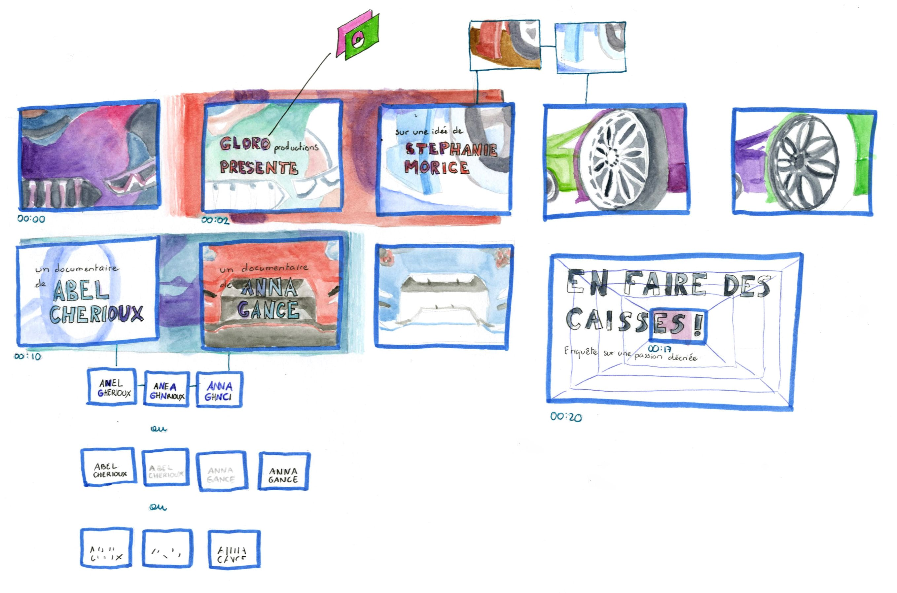
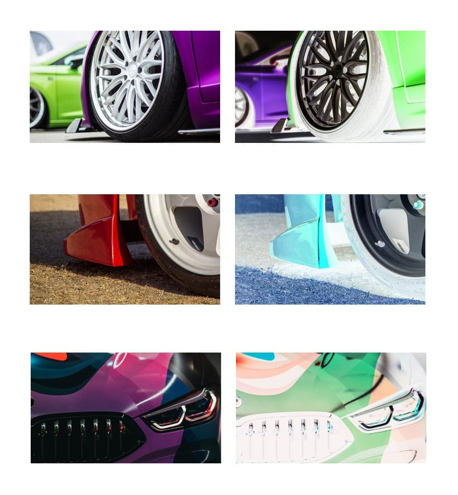
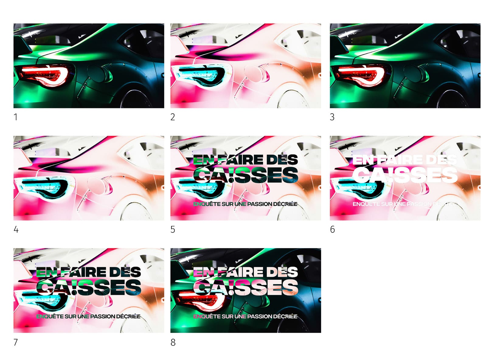
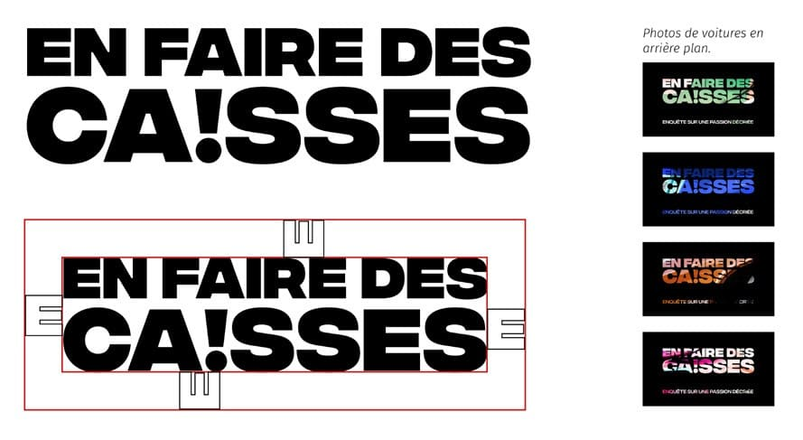
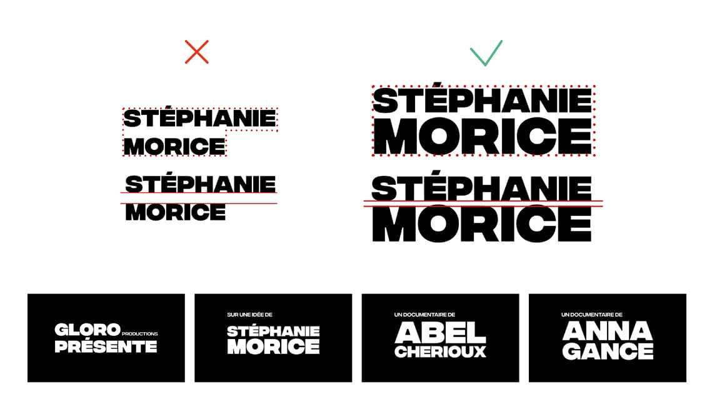

En faire des caisses
Motion design
Proposition de générique pour un documentaire fictif sur le tuning
After Effects
Quête de perfection
Le tuning porte sur la recherche d’optimisation, de performance. C’est une quête de perfection. Donc un certain équilibre, une uniformité, un ensemble cohérent, lisse. Ainsi, je me suis concentrée sur les textures et les reflets de métal.




